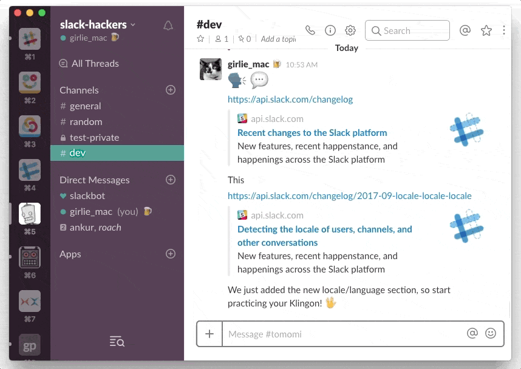
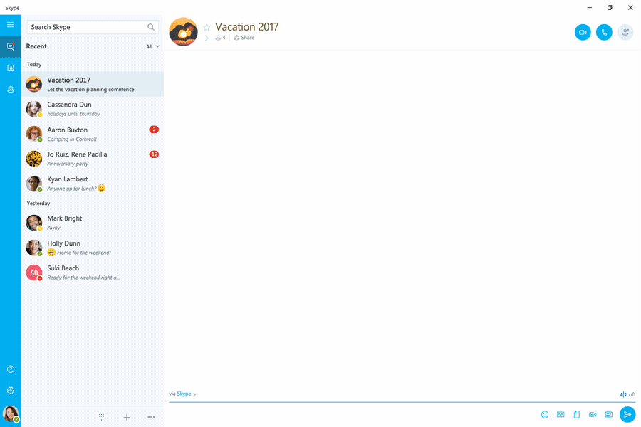
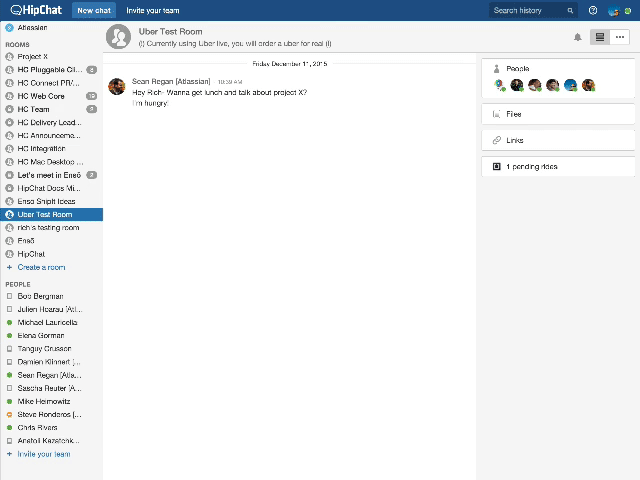
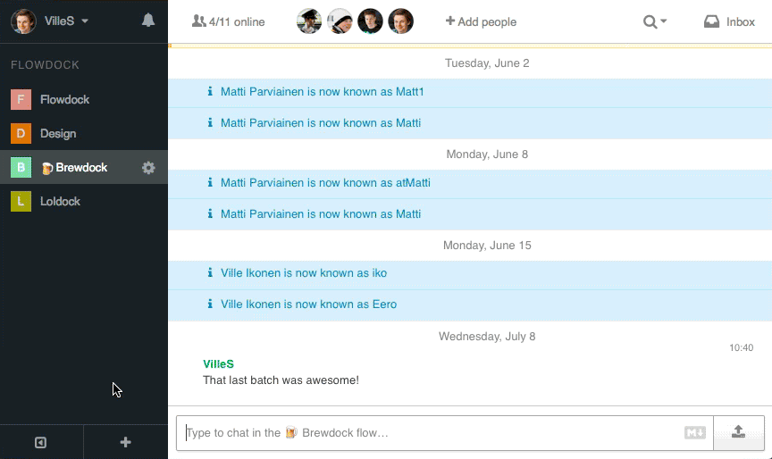

Slack — це платформа для корпоративного спілкування. Цей мультиплатформенний додаток — невеличка ілюстрація до того, як піде в небуття перевантаження контекстом та безкінечними повідомленнями.Для цілого покоління більша частина роботи в офісі відбувалась за допомогою проведення зустрічей та ведення електронного листування. Slack зумів об’єднати обидві складові — і при цьому позбутися усіх характерних для них негативних рис.
З ним ви можете організувати чати по темам і інтегрувати свою роботу з Github, Trello, Pingdom, і іншими інструментами
@ згадування - Використовуючи цю функцію, ви можете пінгом звернути увагу ваших колег, навіть якщо вони в офлайні. Slack підтримує вступ повідомлень на десктопи;
Slack розробив додатки, які сумісні з iOS, Android, Windows Phone, Mac OS, Linux і Windows, що дозволяє вам використовувати повний функціонал Slack і ряд його особливостей, які відсутні на веб-сайтах більшості основних платформ;
Програма "Skype для бізнесу" – це єдина платформа для викликів, конференцій, відео та спільного доступу, яка дає можливість спростити інфраструктуру.
Спілкування на різних пристроях - Підтримуйте зв’язок зі своєю робочою групою звідусіль за допомогою програм для мобільних пристроїв із Windows, iOS і Android. Організовуйте наради будь-якого масштабу й запрошуйте на них учасників, де б вони не були, за допомогою Skype для бізнесу Room Systems і Surface Hub.
Зручні наради - Працюйте, ніби ви всі перебуваєте в одній кімнаті, навіть якщо це не так. Служба "Skype для бізнесу" задовольнить усі потреби під час наради будь-якого типу – від сеансів співпраці в групі до трансляцій нарад наживо й участі в конференціях за допомогою телефона.
Безпека, керованість і відповідність вимогам - Забезпечте комплексний захист, керованість і відповідність вимогам на всіх рівнях – від користувача до всього підприємства. Скористайтеся можливостями масштабування на вимогу та для керування в службі Office 365.
Microsoft Teams - новий додаток в рамках Office 365. Підключається до OneNote, Planner, Power BI і іншим програмам. Користувачі можуть створювати групові та особисті чати, бесіди для окремих проектів, обмінюватися файлами. Для дзвінків використовується Skype for Business. Є можливість планувати зустрічі і відеоконференції.

Завдання лунають через інтегрований Planner; можна працювати з документами прямо в додатку
Зручна для користувачів Office 365 - підключається до всіх програм цього сервісу
Сумісна з Asana, Trello і іншими планувальниками
Запущений у 2010 році і куплений компанією Atlassian в березні 2012 року сервіс дозволяє членам команди спілкуватися в кімнатах, які об'єднують кількох співрозмовників, а також в режимі 1:1. У платній версії системи користувачам доступні відеодзвінки, демонстрація екрану і необмежений обсяг збережених даних.
Інтеграція з іншими сервісами: Trello, Wunderlist, GitHub, Bitbucket, Google Календар, Confluence, Zendesk, MailChimp, Asana, JIRA, Hangouts
Наявність AIR-клієнта, який дозволяє спілкуватися в чаті і отримувати повідомлення без браузера
Застосовує підхід сервісу Twitter - користувач може «підписатися» на потрібні йому кімнати і бачити, що в них публікується. Крім того, його можна згадати навіть в тій кімнаті, на яку він не підписаний, і він все одно побачить це згадка. Малоінформативні кімнати можна ігнорувати.
Flowdock - це онлайн-сервіс для реалізації командного чату і спільної роботи. Веб-додаток дозволяє задіяти в одному місці всі ваші потоки з використанням мобільних пристроїв. Звідси можна вести бесіди зі своїми колегами, командами, переглядати їх поштову скриньку, завантажувати зображення і обговорювати будь-які проекти.
Flowdock дозволяє розподіляти людей по відділах, включати нові групи на різні теми або писати з позначкою @everyone для залучення уваги всієї команди.
Доступно швидке додавання файлів за допомогою перетягування на вікно чату, виправлення своїх повідомлень, попередній перегляд картинок, PDF-файлів і YouTube-відео. При цьому всі завантажені файли зберігаються в чаті. Є і отримання повідомлень.
Flowdock інтегрується з такими сервісами, як Git, Capistrano, Heroku, FogBugz, Kiln, Mercurial, Nagios, Hudson / Jenkins і багатьма іншими засобами управління проектами, відстеження помилок, контролю версій, розгортання і іншими.
Sqwiggle - це платформа для синхронної спільної роботи розподіленої команди. Все дійство зосереджено в одному вікні в форматі відеочату. Збоку виводяться коментарі і доступно відстеження завдань. Підключення активно протягом усього дня, тому в реальному часі можна спостерігати за тим, хто на місці, а кого ні.

У Sqwiggle є кілька «робочих кімнат» для різних відділів, команд або груп. Команди не обмежуються чатами і відеоконференціями. В системі є можливість ділитися з учасниками посиланнями, фрагментами коду, знімками, роликами і статусами.
Інтеграція з Github, Travis, Zapier і ін. Сповіщення про активність та діях. Запрошення електронною поштою. Стрічка з усіма подіями.
Відеоконференції та чати для різної кількості користувачів. Підключення до спілкування з будь-яким співробітником. SSL-з'єднання. Низьке завантаження каналу при бездіяльності.